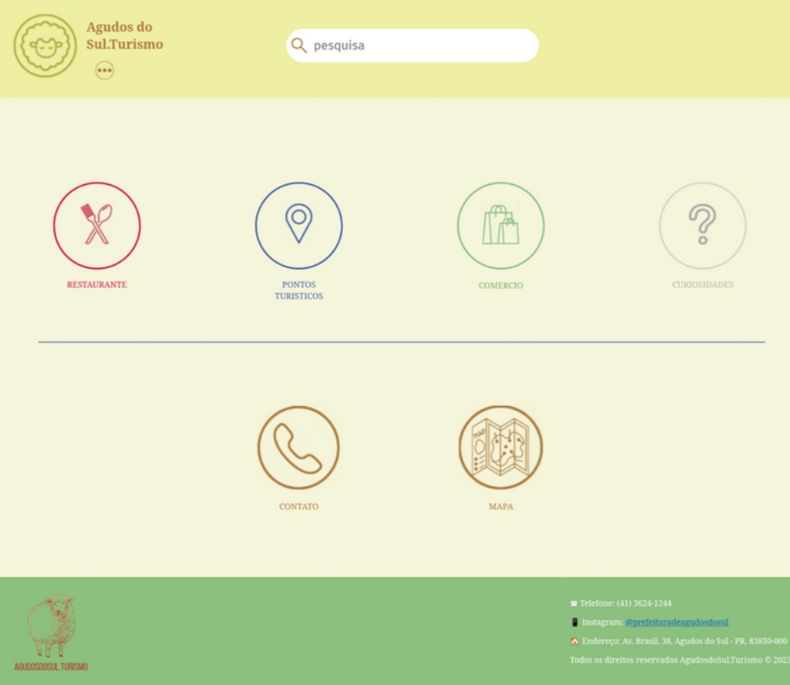

EXPERIÊNCIA CRIATIVA: NAVEGANDO NA COMPUTAÇÃO
Março:
Operation Suit Man é um jogo desenvolvido usando a plantaforma Construct 3.
Foi apresentado no dia 30/03 em sala de aula.
Tempo para entregar foi do dia 09/03 até 30/03.
um jogo 2d, plantaforma e pixel.
A história é sobre um agente secreto que invade uma doca abandoanda com missão de exterminar terroristas.
Jogo foi feito em duas semanas.
Tem 8 minutos de duração.
Abril - Maio:
Pokemon é um aplicativo desenvolvido no programa Processing.
Pokemon principal é a eevee e suas evoluções.
Aplicativo de pesquisa que auxiliar o usuário na identificação do Pokemon.
Cada membro do grupo fez uma evolução da eevee.
Foi apresentado no dia 11/05
Tempo para entregar foi do dia 06/04 até 11/05.
Maio - Junho:
Agudos do Sul.Turismo é um site de turismo criado com uso de HTML e CSS.
Cidade escolhida foi Agudos do Sul.
Foi apresentado no dia 22/06
Tempo para entregar foi do dia 18/05 até 22/06.
